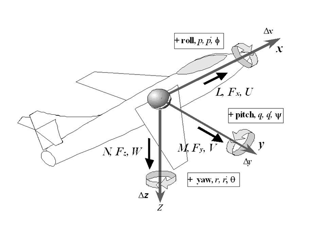
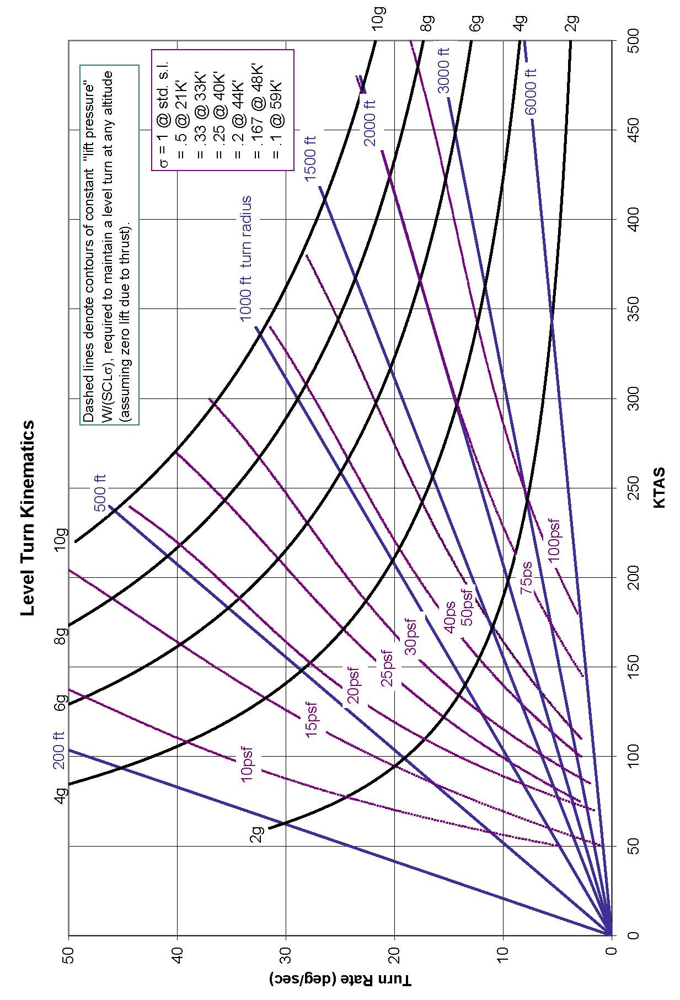

1 General Information
1.1 Unit Conversions1
(references 1.1, 1.2)
| Exponent | Prefix | Abbreviation |
|---|---|---|
| 1018 | exa | E |
| 1015 | peta | P |
| 1012 | tera | T |
| 109 | giga | G |
| 106 | mega | M |
| 103 | kilo | k |
| 102 | hecto | h |
| 10 | deka | da |
| 10-1 | deci | d |
| 10-2 | centi | c |
| 10-3 | milli | m |
| 10-6 | micro | \(\mu\) |
| 10-9 | nano | n |
| 10-12 | pico | p |
| 10-15 | femto | f |
| 10-18 | atto | a |
| Multiply | by | To Obtain | |
|---|---|---|---|
| Angles | circles | 1 | circumferences |
| circles | 12 | signs | |
| circles | 21,600 | minutes | |
| circles | 2\(\pi\) | radians | |
| circles | 360 | degrees | |
| degrees | 0.011 11 | quadrants | |
| degrees | 3600 | seconds | |
| degrees | 60 | minutes | |
| mils (Army) | 0.056 25 | degrees | |
| mils (Navy) | 0.057 29 | degrees | |
| quadrants | 90 | degrees | |
| radians | 57.2958 | degrees | |
| revolutions | 360 | degrees | |
| 2 | sphere | 4\(\pi\) | steradians |
| Angular Acceleration | rev/min2 | 0.001 745 | rad/sec2 |
| Angular Velocity | cycles/sec | 6.2814 | rads/sec |
| rads/sec | 0.1592 | rev/sec (cycles/sec) | |
| rads/sec | 9.549 | rpm | |
| rad/sec | 57.296 | deg/sec | |
| rpm | 0.016 67 | rev/sec | |
| Area | acres | 43,560 | ft2 |
| ares | 100 | m2 | |
| barn | 10-28 | m2 | |
| centares | 1 | m2 | |
| circular mils | 7.854 x 10-7 | in2 | |
| cm2 | 100 | mm2 | |
| ft2 | 144 | in2 | |
| ft2 | 0.092 903 04 | m2 | |
| in2 | 6.452 | cm2 | |
| in2 | 106 | mils2 | |
| m2 | 10.76 | ft2 | |
| section | 2,589,988.1 | m2 | |
| st. mile2 | 27,780,000 | ft2 | |
| st. mile2 | 2.590 | km2 | |
| township | 93,239,572 | m2 | |
| yd2 | 9 | ft2 | |
| yd2 | 0.8361 | m2 | |
| Density | grams/cm3 | 0.036 13 | pounds/in3 |
| grams/cm3 | 62.43 | pounds/ft3 | |
| kg/m3 | 16.018 463 | pounds/ft3 | |
| slugs/ft3 | 515.4 | kg/m3 | |
| pounds/in3 | 1728 | pounds/ft3 | |
| slugs/ft3 | 1.94 | grams/cm3 | |
| Electrical Quantities | amperes | 0.1 | abamperes |
| amperes | 1.0365x10-5 | faradays/sec | |
| amperes | 2.998x109 | statamperes | |
| amperes.cicmil | 1.973x105 | amperes/cm2 | |
| ampere-hours | 3,600 | coulombs | |
| ampere-hours | 1.079x1013 | statcoulombs | |
| ampere turn/cm | 1.257 | gilberts/cm | |
| ampere turn/cm | 1.257 | oersteds | |
| coulombs | 0.1 | abcoulombs | |
| coulombs | 6.243x1018 | electronic charges | |
| coulombs | 1.037x10-5 | faradays | |
| coulombs | 2.998x109 | statcoulombs | |
| faradays | 26.8 | ampere-hours | |
| farads | 10-9 | abfarads | |
| farads | 106 | microfarads | |
| farads | 8.986x1011 | statfarads | |
| gausses | 1 | maxwells/cm2 | |
| gausses | 6.452 | lines/in2 | |
| gilberts | 0.7958 | ampere turns | |
| henries | 109 | abhenries | |
| henries | 1.113x10-12 | stathenries | |
| maxwells | 1 | lines | |
| oersteds | 2.998x1010 | statoersteds | |
| ohms | 109 | abohms | |
| ohms | 1.113x1012 | statohms | |
| ohm-cm | 6.015x106 | circ mil-ohms/ft | |
| volts | 108 | abvolts | |
| volts | 0.003 336 | statvolts | |
| Energy & Work | Btu | 1.055x1010 | ergs |
| Btu | 1055.1 | Joules (N-m) | |
| Btu | 2.9302x10-4 | kilowatt-hours | |
| Btu | 251.99 | calories (gram) | |
| Btu | 778.03 | foot-pounds | |
| calories | 4.1868 | watt-seconds | |
| calories | 3.088 | foot-pounds | |
| electron volt | 1.519x10-22 | Btu | |
| ergs | 1 | dyne-centimeters | |
| ergs | 7.376x108 | foot-pounds | |
| foot-pounds | 1.3558 | Joules (N-m)** | |
| foot-pounds | 3.766x10-7 | kilowatt-hours | |
| foot-pounds | 5.051x10-7 | horsepower-hours | |
| hp-hours | 0.7457 | kilowatt-hours | |
| hp-hours | 2546.1 | Btu | |
| Joules | 0.238 89 | calories | |
| Joules | 1 | Newton-meters | |
| Joules | 1 | watt-seconds | |
| Joules | 107 | ergs | |
| kilowatt-hours | 3.6x106 | Joules | |
| thermies | 4.1868x106 | Joules | |
| watt-seconds | 0.737 56 | foot-pounds | |
| Force3 | dynes | 3.597x10-5 | ounces |
| kilograms-force | 9.806 65 | Newtons | |
| kiloponds | 9.806 65 | Newtons | |
| kip (kilopound-force) | 4,448.221 | Newtons | |
| Newtons | 0.224 808 931 | pounds | |
| Newtons | 100,000 | dynes | |
| ounces | 20 | pennyweights | |
| ounces (troy) | 480 | grains | |
| Fuel4 | gal | 5.8 | lbs (U.S. AV gas) |
| gal | 7.5 | lbs ( U.S. oil) | |
| Liter (jet A) | 0.812 | kilograms | |
| Liter (jet A) | 1.794 | pounds | |
| Illumination | candles | 1 | lumens/steradian |
| candles/cm2 | \(\pi\) | lamberts | |
| candlepower | 12.566 | lumens | |
| foot-candles | 1 | lumens/ft2 | |
| foot-candles | 10.764 | lux | |
| foot-lamberts | 1 | lumen/ft2 | |
| lamberts | 295.72 | candles/ft2 | |
| lamberts | 929.03 | lumens/ft2 | |
| lumens | 0.001 496 | watts | |
| lumens/in2 | 1 | fots | |
| lumens/m2 | 1 | lux | |
| lux | 1 | meter-candles | |
| lux | 0.0001 | fots | |
| meter-candles | 1 | lumens/m2 | |
| millilamberts | 0.2957 | candles/ft2 | |
| millilamberts | 0.929 | foot-lamberts | |
| milliphots | 0.929 | foot-candles | |
| milliphots | 0.929 | lumens/ft2 | |
| milliphots | 10 | meter-candles | |
| Length | ångströms | 10-10 | meters |
| astronomical units | 1.496x1011 | meters | |
| cable lengths | 120 | fathoms | |
| caliber | 0.01 | inches | |
| cubit | 0.4572 | meters | |
| fermi | 10-15 | meters | |
| fathoms | 6 | feet | |
| feet | 12 | inches | |
| 5 | feet | 0.3048 | meters |
| furlongs | 40 | rods | |
| hands | 4 | inches | |
| inches | 2.54 | cm | |
| kilometers | 3281 | feet | |
| kilometers | 0.539 96 | nautical miles | |
| leagues (U.S.) | 3 | nautical miles | |
| light years | 5.88x1012 | statute miles | |
| links (engnr’s) | 12 | inches | |
| links (srvyr’s) | 7.92 | inches | |
| meters | 3.280 84 | feet | |
| meters | 39.370 079 | inches | |
| microns | 10-6 | meters | |
| mils | 10-3 | inches | |
| nautical miles | 1.150 78 | statute miles | |
| 6 | nautical miles | 1,852 | meters |
| nautical miles | 6,076.115 486 | feet | |
| paces | 0.762 | meters | |
| parsec | 1.9163x1013 | statute miles | |
| perch | 5.0292 | meters | |
| pica (printers) | 0.004 217 5176 | meters | |
| point (printers) | 0.000 351 4598 | meters | |
| pole (=rod) | 5.0292 | meters | |
| skein | 109.728 | meters | |
| statute miles | 5,280 | feet | |
| statute miles | 1.609 344 | kilometers | |
| statute miles | 8 | furlongs | |
| yards | 3 | feet | |
| Linear Acceleration | feet/sec2 | 1.097 28 | kilometers/hr/sec |
| feet/sec2 | 0.3048 | meters/sec2 | |
| feet/sec2 | 0.6818 | mph/sec | |
| g | 32.174 049 | feet/sec2 | |
| g | 9.806 65 | meters/sec2 | |
| gals (Galileo) | 0.01 | meters/sec2 | |
| knots/sec | 1.6878 | feet/sec2 | |
| meters/sec2 | 3.6 | kilometers/hr/sec | |
| mph/sec | 0.447 | meters/sec2 | |
| mph/sec | 1.609 | kilometers/hr/sec | |
| Mass | carats | 200 | milligrams |
| grams | 0.035 274 | ounces | |
| grains | 6.479 891x10-5 | kilograms | |
| hundredweight (long or Imperial) | 50.80 | kilograms | |
| hundredweight (short) | 45.359 237 | kilograms | |
| kilograms | 0.068 52 | slugs | |
| kilograms | 6.024x1026 | atomic mass units | |
| kilograms | 2.2046 | pounds | |
| ounces (avd) | 28.349 523 125 | grams | |
| ounces (troy) | 31.103 4768 | grams | |
| pounds (mass) | 1 | pounds (force) | |
| pounds (mass) | 0.453 592 37 | kilograms | |
| pounds (mass) | 0.031 081 | slugs | |
| scruples (apoth) | 0.001 295 9782 | kilograms | |
| slugs | 32.174 | pounds | |
| slugs | 14.594 | kilograms | |
| tons (long) | 1016.047 | kilograms | |
| tons (assay) | 0.029 16 | kilograms | |
| tons (metric) | 1000 | kilograms | |
| tons (short) | 907.1847 | kilograms | |
| Moments of Inertia | gram-cm2 | 0.737x10-7 | slug-ft2 |
| pound-ft2 | 0.031 081 | slug-ft2 | |
| slug-in2 | 0.006 9444 | slug-ft2 | |
| slug-ft2 | 1.3546 | kg-m2 | |
| slug-ft2 | 32.174 | pound-ft2 | |
| slug-ft2 | 12.00 | pound-inch-sec2 | |
| slug-ft2 | 192.00 | ounce-inch-sec2 | |
| Power | btu/min | 0.017 58 | kilowatts |
| calories(kg)/min | 3087.46 | foot-pounds/min | |
| ergs/sec | 7.376x10-8 | foot-pounds/sec | |
| ft(lbs)/min | 2.260x10-5 | kilowatts | |
| ft(lbs)/sec | 0.077 12 | btu/min | |
| ft(lbs)/sec | 1.356 | watts | |
| horsepower | 550 | ft(lb)/sec | |
| horsepower | 33,000 | ft(lbs)/min | |
| horsepower | 10.69 | calories (kg)/min | |
| horsepower | 745.7 | watts | |
| horsepower (metric) | 735.5 | watts | |
| horsepower | 1.1014 | horsepower (metric) | |
| kilowatts | 1.341 | horsepower | |
| watts | 107 | ergs/sec | |
| watts | 1 | Joules/sec | |
| Pressure | atmospheres | 14.696 | pounds/in2 |
| atmospheres | 29.92 | inches of Hg | |
| atmospheres | 760 | mm of Hg | |
| bars | 106 | dynes/cm2 | |
| bars | 29.52 | inches of Hg | |
| barye | 0.1 | Newtons/m2 | |
| dynes/cm2 | 10 | Newtons/m2 | |
| inches of H2O | 5.202 37 | pound/ft2 | |
| inches of Hg | 70.726 19 | pounds/ft2 | |
| inches of Hg | 0.491 154 | pounds/in2 | |
| inches of Hg | 13.595 | inches of H2O | |
| kiloPascals | 100 | bars | |
| hectoPascals | 1 | millibars | |
| millibars | 0.029 53 | inches of Hg | |
| mm of Hg | 0.019 337 | pounds/in2 | |
| mm of Hg | 133.32 | Newtons/m2 | |
| Pascals | 1 | Newton/m2 | |
| pieze | 1000 | Newtons/m2 | |
| pounds/ft2 | 0.014 14 | inches of Hg | |
| pounds/ft2 | 47.88 | Newtons/m2 | |
| pounds/in2 | 2.036 | inches of Hg | |
| pounds/in2 | 27.681 | inches of H2O | |
| pounds/in2 | 6894.757 28 | Pascal | |
| torrs | 133.32 | Newtons/m2 | |
| Temperature | Kelvin | Celsius + 273.15 | |
| Rankine | Fahrenheit + 459.67 | ||
| Celsius | (Fahrenheit - 32) * 5/9 | ||
| Fahrenheit | (9/5 * Celsius) + 32 | ||
| Time | days (solar) | 24 | hours |
| days (sidereal) | 23.934 | hours | |
| days (solar) | 1.0027 | days (sidereal) | |
| hours | 60 | minutes | |
| minutes | 60 | seconds | |
| months (sidereal) | 27d + 7hr + 43min + 11.47sec | ||
| months (lunar) | 29d + 12hr + 44min + 2.78sec | ||
| year | 365.242 198 79 | days | |
| Torque | foot-pounds | 1.3558 | Newton-meters |
| foot-pounds | 0.1383 | kilogram-meters | |
| ounce-inches | 72.008 | gram-centimeters | |
| pound-inches | 1129800 | dyne-centimeters | |
| Velocity | inches/sec | 0.0254 | meters/sec |
| km/hr | 0.621 371 | mph | |
| km/hr | 0.9113 | feet/sec | |
| knots | 1.687 81 | feet/sec | |
| knots (kts) | 1.150 78 | mph | |
| knots (kts) | 1.852 | km/hr | |
| knots (kts) | 0.514 44 | meters/sec | |
| meters/sec | 3.281 | ft/sec | |
| meters/sec | 3.6 | km/hr | |
| meters/sec | 196.85 | feet/min | |
| mph | 1.466 667 | feet/sec | |
| Viscosity | centistokes | 10-6 | m2/sec |
| ft2/sec | 0.0929 | m2/sec | |
| pound sec/ ft2 | 47.880 258 | Newton secs/m2 | |
| poise | 0.1 | Newton secs/m2 | |
| rhe | 10 | m2/Newton second | |
| Volume | acre-feet | 43,560 | ft3 |
| acre-feet | 1,233 | m3 | |
| acre-feet | 3.259x105 | gals (U.S.) | |
| barrels | 31.5 | gals (U.S.) | |
| board-feet | 144 | in3 | |
| bushels | 1.244 | ft3 | |
| bushels | 32 | quarts (dry) | |
| bushels | 4 | pecks | |
| cm3 | 0.001 | liters | |
| cm3 | 0.033 81 | fluid ounces | |
| cm3 | 0.061 02 | in3 | |
| cord-feet | 4x4x1 | ft3 | |
| cords | 128 | ft3 | |
| cups | 0.5 | pints (liquid) | |
| dram (fluid) | 3.696 69x10-6 | m3 | |
| ft3 | 0.028 3167 | m3 | |
| ft3 | 1728 | in3 | |
| ft3 | 28.32 | liters | |
| ft3 | 7.481 | gals (U.S.) | |
| gals (Imperial) | 1.2009 | gals (U.S.) | |
| gals (Imperial) | 277.42 | in3 | |
| gals (U.K.) | 4546.1 | cm3 | |
| gals (U.S.) | 231 | in3 | |
| gals (U.S.) | 0.003 785 | m3 | |
| gals (U.S.) | 3.785 | liters | |
| gals (U.S.) | 4 | quarts (liquid) | |
| gals (U.S.) | 0.023 8095 | barrels (U.S.) | |
| gills | 7.219 | in3 | |
| hogshead | 2 | barrels | |
| in3 | 16.39 | cm3 | |
| liters | 0.028 38 | bushels | |
| liters | 0.9081 | quarts (dry) | |
| liters | 1.057 | quarts (liquid) | |
| liters | 1000 | cm3 | |
| liters | 61.03 | in3 | |
| m3 | 1.308 | yd3 | |
| m3 | 1000 | liters | |
| m3 | 264.2 | gals (U.S.) | |
| m3 | 35.314 667 | ft3 | |
| mil-feet (circ.) | 0.000 1545 | cm3 | |
| ounces (U.K.) | 28.413 | cm3 | |
| ounces (U.S.) | 29.574 | cm3 | |
| pecks | 8 | quarts (dry) | |
| pecks | 8.81 | liters | |
| perches | 0.7008 | m3 | |
| perches | 24.75 | ft3 | |
| pints (dry) | 33.60 | in3 | |
| pints (liquid) | 28.88 | in3 | |
| pints (liquid) | 4 | gals | |
| quarts (dry) | 1.164 | quarts (liquid) | |
| quarts | 2 | pints | |
| register tons | 100 | ft3 | |
| shipping ton (U.S.) | 40 | ft3 | |
| shipping ton (Br.) | 42 | ft3 | |
| steres | 1000 | liters | |
| tablespoons | 0.0625 | cups | |
| teaspoons | 0.3333 | tablespoons |
1.2 Greek Alphabet
| Uppercase | LaTeX Command | Lowercase | LaTeX Command | Name | Say |
|---|---|---|---|---|---|
| \(Α\) | Α | \(\alpha\) | \alpha | Alpha | æl-fə |
| \(Β\) | Β | \(\beta\) | \beta | Beta | bei-tə |
| \(\Gamma\) or \(\varGamma\) | \Gamma or \varGamma | \(\gamma\) | \gamma | Gamma | gæ-mə |
| \(\Delta\) or \(\varDelta\) | \Delta or \varDelta | \(\delta\) | \delta | Delta | del-tə |
| \(Ε\) | Ε | \(\epsilon\) or \(\varepsilon\) | \epsilon or \varepsilon | Epsilon | eps-ill-aan |
| \(Ζ\) | Ζ | \(\zeta\) | \zeta | Zeta | zei-tə |
| \(Η\) | Η | \(\eta\) | \eta | Eta | ei-tə |
| \(\Theta\) or \(\varTheta\) | \Theta or \varTheta | \(\theta\) or \(\vartheta\) | \theta or \vartheta | Theta | thei-tə |
| \(Ι\) | Ι | \(\iota\) | \iota | Iota | aai-oh-tə |
| \(Κ\) | Κ | \(\kappa\) or \(\varkappa\) | \kappa or \varkappa | Kappa | kæ-pə |
| \(\Lambda\) or \(\varLambda\) | \Lambda or \varLambda | \(\lambda\) | \lambda | Lambda | læm-də |
| \(M\) | M | \(\mu\) | \mu | Mu | myoo |
| \(Ν\) | Ν | \(\nu\) | \nu | Nu | nyoo |
| \(\Xi\) or \(\varXi\) | \Xi or \varXi | \(\xi\) | \xi | Xi | ksaai |
| \(Ο\) | Ο | \(ο\) | ο | Omicron | oh-mə-kraan |
| \(\Pi\) or \(\varPi\) | \Pi or \varPi | \(\pi\) or \(\varpi\) | \pi or \varpi | Pi | paai |
| \(P\) | P | \(\rho\) or \(\varrho\) | \rho or \varrho | Rho | roh |
| \(\Sigma\) or \(\varSigma\) | \Sigma or \varSigma | \(\sigma\) or \(\varsigma\) | \sigma or \varsigma | Sigma | sig-mə |
| \(Τ\) | Τ | \(\tau\) | \tau | Tau | taa’u |
| \(\Upsilon\) or \(\varUpsilon\) | \Upsilon or \varUpsilon | \(\upsilon\) | \upsilon | Upsilon | oops-ill-on |
| \(\Phi\) or \(\varPhi\) | \Phi or \varPhi | \(\phi\) or \(\varphi\) | \phi or \varphi | Phi | faai |
| \(Χ\) | Χ | \(\chi\) | \chi | Chi | kaai |
| \(\Psi\) or \(\varPsi\) | \Psi or \varPsi | \(\psi\) | \psi | Psi | psaai |
| \(\Omega\) or \(\varOmega\) | \Omega or \varOmega | \(\omega\) | \omega | Omega | oh-meg-ə |
1.3 Greek Symbols Used for Aircraft
| Symbol | Used For |
|---|---|
| \(\alpha\) | angle of attack (degrees or radians) |
| \(\alpha_{\tau}\) | tail angle of attack |
| \(\beta\) | angle of sideslip (degrees) |
| \(\gamma\) | flight path angle relative to horizontal |
| \(\gamma\) | specific heat ratio (1.4 for air) |
| \(\delta\) | relative pressure ratio ( \(\frac{P_a}{P_0}\)) |
| \(\delta_a\) | aileron deflection angle |
| \(\delta_r\) | rudder deflection angle |
| \(\delta_e\) | elevator deflection angle |
| \(\varepsilon\) | downwash angle at tail (degrees) |
| \(\zeta\) | damping ratio |
| \(\eta\) | efficiency |
| \(\theta\) | body axis/pitch angle |
| \(\theta\) | relative temperature ratio, \(T_a / T_0\) |
| \(\iota\) | angle of incidence |
| \(\iota_F\) | thrust angle of incidence |
| \(\iota_T\)* | horizontal tail angle of incidence |
| \(\lambda\) | pressure lag constant |
| \(\Lambda\) | wing sweep angle |
| \(\mu\) | coefficient of absolute viscosity =\(\rho \nu\) |
| \(\mu\) | Mach cone angle |
| \(\nu\) | kinematic viscosity =\(\mu / g\) |
| \(\pi\) | nondimensional parameter |
| \(\rho\) | density |
| \(\rho_a\) | ambient air density |
| \(\rho_0\) | standard atmospheric density (slugs/ft^3 ) |
| \(\sigma\) | air density ratio \((\rho_{\alpha} / \rho_0)\) |
| \(\sigma_{\mathrm{cr}}\) | critical density |
| \(\tau\) | shear stress (pounds per square inch) psi |
| \(\tau_R\) | Roll Mode Time Constant (sec) |
| \(\phi\) | bank angle (degrees) |
| \(\psi\) | aircraft heading (degrees) |
| \(\omega\) | frequency |
| \(\omega\) | rotational velocity (radians per second) |
| \(\omega_d\) | damped natural frequency |
| \(\omega_n\) | natural undamped frequency |
1.4 Common Subscripts
| Subscript | Meaning |
|---|---|
| a | aileron |
| a | ambient |
| \(\mathrm{alt}\) | at test altitude |
| \(\mathrm{avg}\) | average |
| c | calibrated |
| e | elevator |
| e | equivalent |
| E | endurance leg of mission |
| F | final |
| I | initial |
| i | inbound leg of mission |
| i | indicated |
| \(\mathrm{ic}\) | instrument corrected |
| l | subscript for coefficient of rolling moment |
| m | mission conditions |
| m | pitching moment |
| n | yawing moment |
| O | outbound leg of mission |
| 0 | sea-level standard day |
| 0 | sea level |
| r | reserve leg of mission |
| r | rudder |
| S | standard day |
| s | standard day at altitude |
| \(\mathrm{SL}\) | sea level |
| T | True |
| t | test day |
1.5 Common Abbreviations
| Abbreviation | Meaning |
|---|---|
| \(a\) | lift curve slope |
| \(a\) | linear acceleration (ft/sec2 or m/sec2) |
| \(a\) | speed of sound |
| A/A | air-to-air |
| a/c | aircraft |
| AAA | anti aircraft artillery |
| AC | aerodynamic center |
| ac | alternating current |
| ACM | air combat maneuvering |
| A/D | analog to digital |
| ADC | air data computer |
| ADC | analog-to-digital converter |
| ADF | automatic direction finder |
| ADI | attitude direction indicator |
| AFMC | Air Force Materiel Command |
| AFOTEC | Air Force Operational Test and Evaluation Center |
| A/G | air-to-ground |
| AGL | above ground level |
| AHRS | attitude heading reference system |
| AM | amplitude modulation |
| AOA | angle of attack |
| AOED | age of ephemeris data |
| APU | auxiliary power unit |
| AR | air refuel (mode of flight) |
| AR | aspect ratio = b2 / S |
| ARDP | advanced radar data processor |
| ARSP | advanced radar signal processor |
| ASPJ | airborne self protection jammer |
| ATC | air traffic control |
| avg | average |
| \(a_x\) | longitudinal acceleration |
| \(a_y\) | lateral acceleration |
| AZ | azimuth |
| \(b\) | span of wing (feet) |
| B/N | bombardier/navigator |
| bbl | barrel |
| BHP | brake horsepower |
| BICOMS | bistatic coherent measurement system |
| BID | bus interface device |
| BIT | built-in test |
| BSFC | brake specific fuel consumption |
| Btu | British thermal unit |
| BW | bandwidth |
| °C | degrees centigrade (see T) |
| \(c\) | brake specific fuel consumption (BSFC) |
| \(c\) | speed of light in a vacuum (186,282 miles/sec = 299,792,500 [m/s]) |
| \(c\) | mean aerodynamic chord (MAC) of a wing |
| C/A | coarse acquisition |
| \(C/N_0\) | carrier to noise ratio |
| CADC | central air data computer |
| CARD | cost analysis requirement document |
| \(C_D\) | coefficient of drag |
| \(C_{D_i}\) | induced drag coefficient |
| \(C_{D_0}\) | zero lift drag coefficient (also parasitic drag coefficient for symmetric wing) |
| CDI | course deviation indicator |
| CDMA | code division multiplex access |
| CDR | critical design review |
| CDRL | contracts data requirement list |
| CDU | control display unit |
| CEA | circular error average |
| CEP | circular error probable |
| \(C_f\) | coefficient of friction |
| CFE | contractor furnished equipment |
| CFT | conformal fuel tank |
| cg | center of gravity (normally in % MAC) |
| \(C_H\) | hinge moment coefficient |
| cine | cinetheodolite |
| \(C_l\) | rolling moment coefficient, airfoil section lift coefficient |
| \(C_L\) | lift coefficient |
| CLHQ | closed loop handling qualities |
| \(C_{\mathrm{lp}}\) | roll damping coefficient |
| \(C_{\mathrm{lr}}\) | roll moment due to yaw rate coefficient |
| \(C_m\) | pitching moment coefficient |
| \(C_M\) | moment coefficient |
| cm | centimeters |
| cos | cosine |
| cot | cotangent |
| \(C_{l_{\beta}}\) | (dihedral) rolling moment due to sideslip |
| \(C_{l_{\delta_a}}\) | aileron power coefficient |
| \(C_{m_q}\) | pitch damping coefficient |
| \(C{m_{\alpha}}\) | longitudinal static stability coefficient |
| \(C{m_{\delta e}}\) | elevator power coefficient |
| \(C_n\) | yawing moment coefficient |
| \(C_{n_r}\) | yaw damping coefficient |
| cnst | constant |
| \(C_{n_{\beta}}\) | directional stability coefficient |
| \(C_{n_{\delta a}}\) | adverse yaw coefficient |
| \(C_{n_{\delta r}}\) | rudder power coefficient |
| COTS | commercial, off–the-shelf |
| CP | center of pressure |
| \(C_P\) | propeller power coefficient |
| CPU | central processing unit |
| \(c_r\) | wing root chord |
| CRM | crew resource management |
| \(c_t\) | wing tip chord |
| CTF | combined test force |
| CY | calendar year |
| \(C_Y\) | side force coefficient |
| \(C_{Y_{\beta}}\) | side force due to sideslip coefficient |
| \(C_{Y_{\delta r}}\) | side force due to rudder coefficient |
| D | diameter |
| D | drag |
| D/A | digital/analog |
| DAC | digital to analog converter |
| DAPS | data acquisition and processing system |
| DARPA | Defense Advanced Research Projects Agency |
| db | decibel |
| DC | direct current |
| deg | degrees |
| DG | directional gyro |
| DGPS | differential GPS |
| DMA | Defense Mapping Agency |
| DME | distance measuring equipment |
| DoD | Department of Defense |
| DOP | dilution of precision |
| DSN | defense switched network |
| DT | development test |
| DTC | data transfer cartridge |
| DTIC | Defense Technical Information Center |
| \(e\) | Oswald efficiency factor |
| \(\mathrm{e}\) | natural mathematical constant = 2.718 281 828 459 |
| E | energy |
| E | lift-to-drag ratio ( \(C_L / C_D\) , \(L/D\) ) |
| EAS | equivalent airspeed |
| EC | electronic combat |
| ECCM | electronic counter countermeasures |
| ECM | electronic countermeasures |
| ECP | engineering change proposal |
| ECS | environmental control system |
| EGT | exhaust gas temperature |
| EL | elevation |
| ELINT | electronic intelligence |
| ELV | expendable launch vehicle |
| EM | electromagnetic |
| \(E_{\mathrm{max}}\) | maximum lift-to-drag ratio |
| EMC | electromagnetic compatibility |
| EMI | electromagnetic interference |
| EMP | electromagnetic pulse |
| EO | electro optical |
| EOM | equations of motion |
| EPR | engine pressure ratio |
| EPROM | electrically programmable read only memory |
| \(E_s\) | specific energy |
| ESA | European Space Agency |
| ESD | Electronic Systems Division |
| ESHP | equivalent shaft horsepower |
| ETA | estimate time of arrival |
| ETE | estimate time en-route |
| EW | early warning |
| EW | electronic warfare |
| °F | degrees Fahrenheit |
| \(f\) | frequency…hertz (originally cycles per second) |
| F.S. | fuselage station |
| \(F_a\) | aileron force |
| FAA | Federal Aviation Administration |
| FAR | Federal Aviation Regulation |
| FCF | functional check flight |
| FDC | flight data computer |
| \(F_e\) | elevator force |
| \(F_{\mathrm{ex}}\) | excess thrust |
| \(F_g\) | gross thrust |
| FL | flight level |
| FLIP | flight information publication |
| FLIR | forward-looking infrared |
| FM | frequency modulation |
| FMC | fully mission capable |
| FMS | flight management system |
| FMS | foreign military sales |
| \(F_n\) | net thrust |
| \(F_n / \delta\) | corrected thrust parameter |
| FOM | figure of merit |
| FOT&E | follow-on test & evaluation |
| FOUO | for official use only |
| FOV | field of view |
| fpm | feet per minute |
| fps | feet per second |
| FQT | formal qualification test |
| \(F_r\) | rudder force |
| FRD | functional requirements document |
| FRL | fuselage reference line |
| FRL | force, rudder, left |
| FRR | force, rudder, right |
| FRR | flight readiness review |
| FSD | full scale development |
| FSI | full scale integration |
| ft | feet |
| ft-lb | English unit of work...foot-pound... |
| fwd | forward |
| FY | fiscal year |
| \(g\) | acceleration due to gravity at altitude |
| \(G\) | gravitational constant = 6.6732x10-11 [N m2/kg2] |
| GAO | Government Accounting Office |
| GCA | ground control approach |
| GCI | ground controlled intercept |
| GDOP | geometric dilution of precision |
| GMT | Greenwich mean time |
| \(g_0\) | standard acceleration due to gravity (sea level, 46 deg latitude) |
| GPS | global positioning system |
| GS | ground speed |
| GSI | glide slope indicator |
| \(h\) | % MAC |
| \(H\) | altitude |
| HARM | high-speed anti-radiation missile |
| \(H_c\) | calibrated altitude (assumed to be pressure altitude in flight test) |
| \(H_D\) | density altitude |
| HDDR | high density digital recorder |
| HDOP | horizontal dilution of precision |
| HF | high frequency |
| Hg | mercury |
| \(H_i\) | indicated altitude |
| \(h_m\) | stick-fixed maneuver point (%MAC) |
| \(h_{'m}\) | stick-free maneuver point (%MAC) |
| \(h_n\) | stick-fixed neutral point (%MAC) |
| \(h_{'n}\) | stick-free neutral point (%MAC) |
| hp | horsepower |
| hr | hour |
| hrs | hours |
| HSI | horizontal situation indicator |
| HUD | head-up display |
| HV | host vehicle |
| Hz | hertz |
| I/O | input/output |
| IAS | indicated airspeed |
| IAW | in accordance with |
| ICAO | International Civilian Aviation Organization |
| ICU | interface computer unit |
| ICBM | intercontinental ballistic missile |
| IFF | identification friend or foe |
| IFR | instrument flight rules |
| ILS | instrument landing system |
| IMC | instrument meteorological conditions |
| IMN | indicated Mach number |
| IMU | inertial measuring unit |
| in | inch |
| INS | inertial navigation system |
| INU | inertial navigation unit |
| IOC | initial operational capability |
| IOT&E | initial operational test & evaluation |
| IUGG | International Union of Geodesy and Geographics |
| \(I_x \text{, } I_x\text{, } I_z\) | moments of inertia |
| \(I_{xy}\text{, }I_{xz}\text{, } I_{yz}\) | products of inertia |
| J | joules energy, (Newton-Meter) |
| J | propeller advance ratio |
| J&S | jamming and spoofing |
| JCS | Joint Chiefs of Staff |
| K | Kelvin (absolute temperature) |
| K | temperature probe recovery factor |
| \(K\text{, }k\) | constants |
| KCAS | knots calibrated airspeed |
| KEAS | knots equivalent airspeed |
| kg | kilogram, metric unit of mass |
| KIAS | knots indicated airspeed |
| KISS | keep it simple, stupid |
| km | kilometer |
| KTAS | knots true airspeed |
| kt | knots |
| \(L\) | Lift (lbs) |
| \(l\) | length |
| \(L\) | rolling moment |
| L/D | Lift-to-drag ratio |
| LANTIRN | low altitude navigation and targeting IR for night |
| lat | lateral |
| lb | pound |
| lbf | English unit of force, often just lb (pound) |
| lbm | English unit of mass, often just lb (slug) |
| LCC | life cycle cost |
| LCD | liquid crystal display |
| LED | light emitting diode |
| LLH | latitude, longitude, height |
| \(\ln\) | natural log, log to the base \(\mathrm{e}\) |
| LO | low observables |
| Log | common log, to the base 10 |
| LOS | line of sight |
| \(l_t\) | distance from \(cg\) to tail’s aerodynamic cent |
| \(L_{\delta a}\) | rolling moment due to aileron deflection |
| \(M\) | moment (ft-lbs) |
| \(M\) | Mach number |
| \(m\) | mass |
| m | meter (length) |
| \(M\) | pitching moment |
| MAG | magnetic |
| MAP | manifold pressure |
| mb | millibar |
| MCA | minimum crossing altitude |
| \(M_{\mathrm{cr}}\) | critical Mach number |
| \(M_d\) | drag divergence Mach number |
| \(M_{\mathrm{ac}}\) | mean aerodynamic cord |
| \(M_{\mathrm{GC}}\) | mean geometric chord |
| MHz | megahertz |
| mHZ | millihertz |
| \(M_{\mathrm{ic}}\) | instrument-corrected Mach number |
| MilSpec | military specification |
| MIL-STD | military standard (publication) |
| min | minute (time) |
| mm | millimeter |
| MOA | memorandum of agreement |
| MOE | measure of effectiveness |
| MOP | measures of performance |
| MOU | memorandum of understanding |
| MP | manifold pressure |
| MSL | mean sea level |
| MTBF | mean time between failures |
| MTTR | mean time to repair |
| MX | maintenance |
| N | newton (force) |
| \(N\) | rotational speed (RPM) |
| \(n\) | load factor (g's) |
| \(N\) | yawing moment |
| \(N_1\) | low pressure compressor speed |
| \(N_2\) | high pressure compressor speed |
| NACA | National Advisory Committee for Aeronautics |
| NADC | Naval Air Development Center |
| NASA | National Aeronautics and Space Administration |
| NAV | navigation |
| NED | North, East, Down |
| NM, nm | nautical mile (6080 feet) |
| NOE | nap-of-the-earth |
| NOFORN | not releasable to foreign nationals |
| NOTAM | notice to airmen |
| NRC | National Research Council (Canada) |
| NWC | Naval Weapons Center |
| \(N_x\) | longitudinal load factor (g's) |
| \(N_y\) | lateral load factor (g's) |
| \(N_z\) | normal load factor (g's) |
| OAT | outside air temperature |
| OAT | on aircraft test |
| OEI | One engine inoperative |
| OPR | Office of Primary Responsibility |
| OSD | Office of the Secretary of Defense |
| OT&E | operational test & evaluation |
| \(p\) | aircraft roll rate (degrees/sec) |
| \(P\) | pressure (N/m2 ,pounds per square inch) |
| \(P_a\) | ambient pressure |
| PCM | pulse code modulation |
| P-code | precision code |
| PD | pulse Doppler |
| PDM | pulse duration modulation |
| PGM | precision guided munitions |
| PIO | pilot induced oscillations |
| \(P_{\mathrm{iw}}\) | total thrust horsepower required |
| Pk | probability of kill |
| PLF | power for level flight |
| \(P_0\) | standard atmospheric pressure (2116.22 lb/ft2 ) |
| POC | point of contact |
| \(P_p\) | pitot pressure |
| ppm | parts per million |
| Prop | propeller |
| \(P_s\) | specific power |
| \(P_s\) | static pressure |
| PS | pulse search |
| psf | pounds per square foot |
| psi | pounds per square inch |
| \(P_T\) | total pressure |
| PW | pulse width |
| \(Q\) or \(q\) | dynamic pressure = \(0.5 \rho V^2\) |
| q | aircraft pitch rate |
| Q | engine torque |
| \(q_c\) | impact pressure (\(P_t − P_a\)) |
| °R | degrees Rankine = °F + \(459.67\) |
| R | perfect gas constant = \(8314.34 \left[ \text{J/kmol K} \right]\) |
| r | aircraft yaw rate (degrees/sec) |
| R | earth radius |
| R | range |
| R&D | research and development |
| R&M | reliability and maintainability |
| R/C | rate of climb |
| rad | radians |
| Radar | radio detection and ranging |
| RAF | resultant aerodynamic force |
| RAM | radar absorbing material |
| RAT | ram air turbine |
| RCS | radar cross section |
| Re | Reynolds number (dimensionless) |
| REP | range error probable |
| RF | range factor |
| RLG | ring laser gyro |
| rms | root mean square |
| RNG | range |
| ROC | rate of climb |
| ROC | required obstacle clearance |
| RPM | revolutions per minute (a.k.a. N) |
| R/T | receiver/transmitter |
| RTO | Rejected/refused takeoff |
| RTO | responsible test organization |
| \(S\) | wing area (ft2 or m2) |
| \(S_a\) | horizontal distance between liftoff and specified height or between specified height and touch down |
| SA | selective availability |
| SA | situational awareness |
| SE | specific endurance |
| sec | seconds (time or angle) |
| SFC | specific fuel consumption |
| \(S_g\) | ground roll distance |
| SHP | shaft horsepower |
| SI | international system of units |
| SIGINT | signal intelligence |
| sin | sine |
| SL | sea level |
| SLAM | standoff land attack missile |
| SLR | side-looking radar |
| S/N | serial number |
| S/N | signal -to-noise ratio |
| SOF | special operations forces |
| SOW | stand-off weapon |
| SR | specific range |
| SRB | safety review board |
| \(S_T\) | tail area |
| std | standard |
| \(S_T\) | total takeoff or landing distance \(S_a + S_g\)) |
| STOL | short takeoff and landing |
| STOVL | short takeoff and vertical landing |
| \(T\) | period of oscillation |
| \(T\) | temperature |
| \(t\) | thickness |
| \(T\text{, }t\) | time (sec) |
| t/c | thickness-to-chord ratio |
| \(T_a\) | ambient temperature |
| TACAN | tactical air navigation |
| tan | tangent |
| \(T_{\mathrm{as}}\) | standard temperature at altitude |
| TAS | true airspeed |
| TBD | to be determined |
| TD | touchdown |
| TED | trailing edge down |
| TEL | trailing edge left |
| TEMP | test and evaluation master plan |
| TER | trailing edge right |
| TEU | trailing edge up |
| TF | terrain following |
| \({\mathrm{THP}}\) | Thrust Horsepower |
| \({\mathrm{THP}}_{\mathrm{alt}}\) | horsepower available at altitude |
| \({\mathrm{THP}}_{\mathrm{max}}\) | maximum horsepower available |
| \({\mathrm{THP}}_{\mathrm{min}}\) | minimum horsepower required |
| \({\mathrm{THP}}_{\mathrm{SL}}\) | horsepower required at sea level |
| TIT | turbine inlet temperature |
| TM | telemetry |
| TMN | true Mach number |
| T/O | takeoff |
| \(T_0\) | standard sea level temperature ( \(59.0°\)F, \(15°\)C) |
| TO | technical order |
| TRB | technical review board |
| TRD | technical requirements document |
| TRP | technical resources plan |
| TSFC | thrust specific fuel consumption |
| TSPI | time, space, position information |
| \(T_t\) | total temperature |
| TV | television |
| T/W | thrust to weight ratio |
| TWT | track while scan |
| TWT | traveling wave tube |
| \(u\) | velocity along aircraft's x-axis |
| UAV | uninhabited aerial vehicle |
| UHF | ultra high frequency |
| UPT | undergraduate pilot training |
| USA | US Army |
| USAF | US Air Force |
| USCG | US Coast Guard |
| USMC | US Marine Corps |
| USN | US Navy |
| UT | universal time |
| UV | ultraviolet |
| \(v\) | velocity along aircraft's lateral axis |
| \(V_H\) | horizontal tail volume coefficient |
| \(V_V\) | vertical tail volume coefficient |
| \(V_1\) | takeoff decision speed |
| \(V_2\) | takeoff safety speed |
| \(V_A\) | design maneuvering speed |
| VAC | volts AC |
| \(V_b\) | buffet airspeed |
| \(V_B\) | design speed for max gust intensity |
| \(V_{\mathrm{br}}\) | velocity for best range |
| \(V_c\) | calibrated airspeed |
| \(V_D\) | design diving speed |
| VDC | volts DC |
| VDOP | vertical dilution of precision |
| \(V_e\) | equivalent velocity |
| \(V_{\mathrm{FE}}\) | maximum flap extended speed |
| VFR | visual flight rules |
| \(V_g\) | ground speed |
| VHF | very high frequency |
| \(V_i\) | indicated airspeed |
| \(V_{\mathrm{ic}}\) | indicated airspeed corrected for instrument error |
| \(V_{\mathrm{iw}}\) | velocity at sea level std day and std weight |
| VLE | max speed with landing gear extended |
| \(V_{\mathrm{LO}}\) | max speed while operating landing gear |
| \(V_{\mathrm{LOF}}\) | lift off speed |
| VLSIC | very large scale integrated circuit |
| \(V_{\mathrm{mc}}\) | minimum directional control speed |
| VMC | visual meteorological conditions |
| \(V_{\mathrm{mca}}\) | minimum directional control speed in the air |
| \(V_{\mathrm{mcg}}\) | minimum directional control speed on the ground |
| \(V_mo/M_mo\) | maximum operating limit speed |
| \(V_{\mathrm{mu}}\) | minimum unstick speed |
| \(V_{\mathrm{NE}}\) | never exceed velocity |
| \(V_{\mathrm{no}}\) | max structural cruising speed |
| \(V_{\mathrm{opt}}\) | optimum velocity for endurance flight |
| VOR | VHF omni-directional range |
| VORTAC | VOR + TACAN |
| \(V_{P_{\mathrm{min}}}\) | velocity for minimum power |
| \(V_{P_{\mathrm{min}_{\mathrm{SL}}}}\) | velocity for minimum power at sea level |
| \(V_R\) | rotation speed |
| \(V_S\) | stall speed |
| \(V_{S_0}\) | stall speed in landing configuration |
| \(V_{S_1}\) | stall speed in some defined configuration |
| VSTOL | vertical/short takeoff and landing |
| \(V_T\) | true airspeed |
| VTOL | vertical takeoff & landing |
| VVI | vertical velocity indicator |
| \(V_W\) | wind velocity |
| \(V_X\) | speed for best angle of climb |
| \(V_Y\) | speed for best rate of climb |
| \(W\) | weight |
| \(w\) | component of velocity along aircraft's Z-axis |
| WDL | weapon data link |
| \(W / \delta\) | weight-to-pressure ratio |
| \(W_f\) | fuel weight |
| WGS-84 | World Geodetic System, 1984 |
| WI | watch item |
| WIT | watch item |
| WOD | word of day |
| WOW | weight on wheels |
| WPT | waypoint |
| wrt | with respect to |
| \(\frac{\dot{W_f}}{\delta \sqrt{\theta}}\) | corrected fuel flow parameter |
| W/S | wing loading |
| \(W_f\) | fuel flow (lb/hr) |
| \(x\) | aircraft longitudinal axis, a line running through the nose & tail |
| \(X_{\mathrm{ac}}\) | distance from leading edge to aerodynamic center |
| Xlink | cross link |
| \(y\) | aircraft lateral axis, a line running the wingtips |
| \(Y\) | force along y-axis |
| Y-code | encrypted P-code |
| \(z\) | aircraft vertical or yaw axis, a line perpendicular to the longitudinal and lateral axes |
| \(\Delta H_{\mathrm{ic}}\) | altimeter instrument correction |
| \(\Delta H_{\mathrm{pc}}\) | altimeter position error correction |
| \(\Delta P_{p}\) | pitot pressure error |
| \(\Delta P_{s}\) | static pressure error |
| \(\Delta V_{c}\) | scale attitude correction to airspeed |
| \(\Delta V_{\mathrm{ic}}\) | instrument correction to airspeed indicator |
| \(\Delta V_{\mathrm{pc}}\) | correction for airspeed position error |
| \(\infty\) | infinity, or freestream conditions |
1.6 Sign Conventions
(reference 1.8)
Editor’s note There is near unanimous agreement on most sign conventions except for pilot inputs and control surface deflections. Although individual organizations generally are consistent in-house, confusion often arises when trying to mathematically translate inputs & deflections from one organization to another. This section documents the generally accepted “body axes” sign conventions then discusses the rationale for several viewpoints addressing the “inputs & deflections” debate. Below is the SFTE sign convention.
Wind Axes Sign Convention
Winds are listed according to the direction they are coming from. Airports refer winds to magnetic North while winds at altitude are typically referred to true North. Headwind is true airspeed minus ground speed. (\(V_w =V_T - V_g\)).
Body Axes Sign Convention
The generally accepted body axes sign convention is based on the establishment of a three-dimensional axis system with the following properties:
1. It is right-handed orthogonal
2. Its origin is at the vehicle's reference center of gravity (defined by builder).
3. The axis system moves with the airframe.

Translational displacements, rates, accelerations, & forces are positive along the positive body axes directions. In spite of the simplicity of this logic, it is important to recognize that lift and normal load factor are positive in the negative z direction and the drag is positive in the negative x direction.
Angular displacements, rates, accelerations & moments, are positive according to the “right hand rule” (a clockwise rotation while looking in the direction of the positive axis) as shown in the figure.
The body axes, forces & translations along them, and moments & rotations about them are shown with arrows indicating the positive direction.
Angular displacements, rates, accelerations & moments, are positive according to the “right hand rule” (a clockwise rotation while looking in the direction of the positive axis) as shown in the figure.
The body axes, forces & translations along them, and moments & rotations about them are shown with arrows indicating the positive direction.

Angle of attack is positive clockwise from the projection of the velocity vector on the xz plane to the reference x body axis. The angle of sideslip is positive clockwise from the xz plane to the velocity vector (wind in the pilot’s right ear).
Aircraft true heading is the angle between true North and the projection of the x-body axis onto the horizontal plane. Mag. heading refers to mag North
The velocity vector is measured relative to the air mass while the flightpath is measured relative to the ground. They are equivalent only when winds are zero.
Flightpath heading angle (ground track heading) \(\sigma_g\), is the horizontal angle between true North and the projection of the flightpath on the horizontal plane. Positive rotation is from north to east.
Flightpath elevation angle; γ, is the vertical angle between the flightpath and the horizontal plane. Positive rotation is up. During a descent, this parameter is commonly known as glide path angle.
Flightpath bank angle; \(\mu\), is the angle between the plane formed by the velocity vector and the lift vector and the vertical plane containing the velocity vector. Positive rotation is clockwise about the velocity vector, looking forward.
Fuselage reference station (FRS), Water line (WL), and Buttock line (BL) are reference coordinates established by the design group.
| Summary of Generally Accepted Body Axes Sign Convention | ||
|---|---|---|
| Parameter Name | Symbol | Positive Direction |
| Translational Measurements | ||
| Longitudinal axis | \(x\) | from ref cg towards nose |
| Lateral axis | \(y\) | from reference cg towards right wing tip |
| Vertical axis | \(z\) | from reference cg towards vehicle bottom (body axis) |
| Longitudinal velocity | \(u\) | along +x axis |
| Lateral velocity | \(v\) | along +y axis |
| Vertical velocity | \(w\) | along +z axis |
| Longitudinal acceleration | \(a_x\) | along +x axis |
| Lateral acceleration | \(a_y\) | along +y axis |
| Vertical acceleration | \(a_z\) | along +z axis |
| Longitudinal load factor | \(N_x\) | along +x axis |
| Lateral load factor | \(N_y\) | along +y-axis |
| Normal load factor | \(N_z\) | along -z axis |
| Longitudinal force | \(F_x\) | along the +x axis |
| Lateral force | \(F_y\) | along the +y axis |
| Normal force | \(F_z\) | along the + z axis |
| Drag force | \(D\) | along the -x axis |
| Side force | \(Y\) | along the + y axis |
| Lift Force | \(L\) | along the -z axis |
Summary of Generally Accepted Body Axes Sign Convention
| Parameter Name | Symbol | Positive Direction |
|---|---|---|
| Angular Measurements | ||
| Bank angle | \(\phi\) | right wing down |
| Pitch angle | \(\theta\) | nose-up |
| Heading | \(\psi\) | 0 North, +Eastward |
| Angle of attack | \(\alpha\) | normal flight attitude |
| Angle of sideslip | \(\beta\) | “wind in the right ear” |
| Roll rate | \(p\) | right wing down |
| Pitch rate | \(q\) | nose up |
| Yaw rate | \(r\) | nose right |
| Roll moment | \(L\) | right wing down |
| Pitch moment | \(M\) | nose up |
| Yaw moment | \(N\) | nose right |
| Flightpath bank angle | \(\mu\) | right wing down |
| Flightpath elevation | \(\gamma\) | climb |
| Flightpath heading | \(\sigma_g\) | 0 true North, + East- ward |
Discussion of “Input & Deflection” Conventions
The debate regarding proper inputs and deflections stems from the user’s viewpoint. From the body axis convention above, flight testers recognize that a climbing right turn generates positive angular measurements. Logically then, pull, right roll and right yaw pilot inputs and subsequent surface deflections should also be positive. The traditional flight tester’s convention follows as “All input forces & displacements, surface deflections, and motions that cause a climbing right turn are positive.”
Due to differential nature of aileron deflections, they require more discussion. The flight tester’s logic implies (but does not dictate) positive deflections are right aileron up and left aileron down. It is, however, equally acceptable to assign downward (or upward) deflection as positive for both ailerons and calculate the difference between the two as a measure of rolling moment.
The rationale within the wind tunnel community is also logical: any control surface deflection that increases lift is positive. From this, positive deflections are trailing edge down (TED) for each: trailing edge flap, stabilizer, elevator, stabilator, rollervator, ruddervator, canard, aileron, flaperon, and all their tabs. Leading edge flap down is also positive. Similarly, since side force is positive to the right, then positive rudder and rudder tab deflections are trailing left (TEL). The only exception to this straightforward logic is for spoilers and speed brakes that extend only in one direction: this deflection is positive even though it might decrease the lift.
Since the above rationale defines downward deflection as positive for both ailerons, a measurement of rolling moments requires calculation of the differential aileron deflection. This rationale does not, however, specifically dictate whether a “positive” differential deflection should generate right wing down (RWD) or left wing down (LWD) moments. Differential aileron can be calculated as either.
\(\delta_{a} = \frac{\delta_{\mathrm{a_R}} - \delta_{\mathrm{a_L}}}{2}\) or \(\delta_{a} = \frac{\delta_{\mathrm{a_L}} - \delta_{\mathrm{a_R}}}{2}\)
Selection of the RWD convention is obvious from the flight tester’s viewpoint since deflections that generate right rolls are positive. An alternative interpretation is that a positive differential aileron deflection is one that lifts the positive (right) wing lifts more than the left (LWD).
Another common convention for ailerons is one that gives the same sign to both ailerons for any input. The “right hand screw” convention is opposite to the flight tester’s convention, but may be more common:
\(\delta_{a_R} = +\mathrm{TED}\), \(\delta_{a_L} = +\mathrm{TEU}\).
The above wind tunnel rationale dictates only the polarity for individual control surface deflections, and leaves open the sign convention debate about controller (inceptor) input forces & displacements. One approach is that positive inputs should generate positive motions while an alternate approach is that positive inputs generate positive surface deflections. Only the flight tester’s convention states that positive inputs yield positive motions and deflections. All approaches are mathematically connected to the hinge moment sign convention discussed below.
The simplest control surface hinge moment convention is that all positive hinge moments (generated by the pilot and the aerodynamics) move the surface in a positive direction, i.e., positive input forces yield positive deflections. This has different implications for the different sign conventions:
• According to the above flight tester’s sign convention, a positive pull force is required to generate a positive (TEU) elevator deflection (positive stick force generates a climb).
• According to wind tunnel sign convention, a positive push force is required to generate a positive (TED) elevator deflection (positive stick force generates a dive).
The alternate viewpoint defines a positive inceptor hinge moment as one that opposes the aerodynamic moments. In other words, a positive inceptor hinge moment moves the surface to a position which generates positive aerodynamic hinge moments or “positive input forces & displacements generate negative surface deflections.”
Based on the above background, the SFTE technical council proposes the following standard convention for inceptor & surface forces & deflections:
• Due to its widespread use and its simple & robust nature, use the wind tunnel convention for control surface deflections.
• Due to widespread test pilot & FTE familiarity and logical nature, use the flight tester’s convention that positive inceptor forces & displacements generate a climbing right turn.
• A fallout from these conventions is that positive inceptor hinge moments generate positive aerodynamic hinge moments (negative surface deflections).
• Consistent use of the above logic requires that the calculated value for aileron deflection be negative for right wing down moments. Similarly, differential ruddervator deflections generating nose right yawing moments should have negative values.
Conventions for Positive Control Surface Deflections
| Parameter | Symbol | Flight Test | SFTE/ Wind Tunnel |
|---|---|---|---|
| Horizontal Stabilizer | \(\delta_i\) | TEU | TED |
| Elevator | \(\delta_e\) | TEU | TED |
| Elev. Tab | \(\delta_{et}\) | TED | TED |
| Stabilators or Rollervators, | \(\delta_{eL}\), \(\delta_{eR}\) | TEU | TED |
| average: | \(\delta_e\) | \(\frac{\delta_{eR} + \delta_{eL}}{2}\) | |
| differential: | \(\Delta\delta_e\) | \(\frac{\delta_{eR} - \delta_{eL}}{2}\) | |
| Elevons | \(\delta_{vL}\), \(\delta_{vR}\) | TEU | TED |
| average: | \(\delta_v\) | \(\frac{\delta_{vR} + \delta_{vL}}{2}\) | |
| differential: | \(\Delta\delta_v\) | \(\frac{\delta_{vR} - \delta_{vL}}{2}\) | |
| Flaperons or trailing edge flap | \(\delta_{fL}\), \(\delta_{fR}\) | TED | TED |
| average: | \(\delta_f\) | \(\frac{\delta_{fR} + \delta_{fL}}{2}\) | |
| differential: | \(\Delta\delta_f\) | \(-\frac{\delta_{fR} - \delta_{fL}}{2}\) | \(\frac{\delta_{fR} - \delta_{fL}}{2}\) |
| Canards | \(\delta_{cL}\), \(\delta_{cR}\) | TED | TED |
| average: | \(\delta_c\) | \(\frac{\delta_{cR} + \delta_{cL}}{2}\) | |
| differential: | \(\Delta\delta_c\) | \(-\frac{\delta_{cR} - \delta_{cL}}{2}\) | \(\frac{\delta_{cR} - \delta_{cL}}{2}\) |
| Leading edge flap | \(\delta_{lefL}\), \(\delta_{lefR}\) | Leading Edge Down | Leading Edge Down |
| Ruddervators | \(\delta_{rvL}\), \(\delta_{rvR}\) | TEU | TED |
| average: | \(\delta_{rv}\) | \(\frac{\delta_{rvR}+\delta_{rvL}}{2}\) | |
| differential: | \(\Delta\delta_{rv}\) | \(-\frac{\delta_{rvR} - \delta_{rvL}}{2}\) | |
| Ailerons | \(\delta_{aL}\), \(\delta_{aR}\) | \(\delta_{aR}\) TEU & \(\delta_{aL}\) TED or \(\delta_{aR}\) & \(\delta_{aL}\) TED |
\(\delta_{aR}\) & \(\delta_{aL}\) TED |
| Aileron Tab | \(\delta_{at}\) | \(\frac{\delta_{aR}+\delta_{aL}}{2}\) | \(\delta_{at}\) TED |
| average: | \(\delta_{a}\) | \(-\frac{\delta_{aR} - \delta_{aL}}{2}\) | \(\frac{\delta_{aR} - \delta_{aL}}{2}\) |
| Spoilers | \(\delta_{sL}\), \(\delta_{sR}\) | Extended | Extended |
| average: | \(\delta_{s}\) | \(\frac{\delta_{sR}+\delta_{sL}}{2}\) | |
| differential: | \(\Delta\delta_{s}\) | \(\frac{\delta_{sR} - \delta_{sL}}{2}\) | \(-\frac{\delta_{sR} - \delta_{sL}}{2}\) |
| Rudders | \(\delta_{rL}\), \(\delta_{rR}\) | TER | TEL |
| average: | \(\delta_{r}\) | \(\frac{\delta_{rR}+\delta_{rL}}{2}\) | |
| Rudder tab | \(\delta_{rt}\) | TEL | |
| Speed brake | \(\delta_{sb}\) | Extended |
Conventions for Positive Inputs and Hinge Moments
| Parameter | Symbol | Flight Test | SFTE/ Wind Tunnel |
|---|---|---|---|
Stick/Wheel Long Force |
\(F_e\) | Pull | |
Stick/Wheel Lateral Force |
\(F_a\) | Right | |
| Pedal Force | \(F_r\) | Right pedal push | |
Stick/Wheel Longitudinal deflection |
\(\delta_{s_e}\) | Aft | |
Stick/wheel Lateral deflection |
\(\delta_{s_a}\) | Right | |
| Pedal deflection | \(\delta_{pR}\), \(\delta_{pL}\) | Right pedal push | |
| Aerodynamic Hinge Moments | \(C_{h_\delta}\) \(C_{h_\alpha}\) \(C_{h_{\delta_o}}\) \(C_{h_{\delta_\text{tab}}}\) |
positive moments generate positive deflections |
|
Inceptor Hinge Moments |
\(C_{h_{F_e}}\) \(C_{h_{F_a}}\) \(C_{h_{F_r}}\) |
+ moments generate + deflections |
+ moments generate - deflections |
*The wind tunnel rationale does not inherently define the polarity for control surface differential deflections.
#The wind tunnel rationale does not specify a convention for positive inputs or hinge moments. Historically, Dutch, U.S. and some British aircraft use a climbing right turn, while it is a diving left turn for Canadian, Australian, and some British aircraft.
The SFTE Technical Council recognizes that several combinations of the above possibilities are currently in use around the world, and invites comments, additions, or corrections to the above summary and proposal. Although SFTE does not expect all organizations to adopt this standard, it still provides a cornerstone for reference purposes
1.7 Thermodynamics Relations
(references 1.3, 1.4, 1.5, 1.6)
1.7.1 Thermodynamic Definitions
A Process is an event with a redistribution of energy within a system.
A Reversible process is one that can be reversed such that the system returns to its original state (form, location & amount).
An Irreversible process cannot return to its original state due to heat flow from higher to lower temperatures, fluid turbulence, friction, or inelastic deformation. The change in entropy is non-zero.
An Isothermal process is one in which the temperature of the fluid is constant.
An Adiabatic process is one in which heat is not transferred to or from the fluid.
Work is the energy transfer by way of changing mechanical energy.
Heat is the energy transfer from one body to another by virtue of a temperature difference between them.
An Isentropic process has constant entropy.
Conduction is the energy transfer from a warmer body by tangible contact (transfer of some internal molecular kinetic energy).
Convection is the repositioning the energy of a fluid without state changes or energy transformations (e.g. heated air moving from one room to another room).
Radiation is the energy transmission through space.
1.7.2 Thermodynamic Symbols
| Symbol | Use |
|---|---|
| \(A\) | area |
| \(C\) | compressibility factor |
| \(c\) | speed of sound |
| \(E = u\) | specific internal energy (e.g. Btu/lb) |
| \(H\) | specific enthalpy (e.g. Btu/lb) |
| \(J\) | Joule |
| \(Q\) | energy supplied to a system or region as heat (e.g. Btu/lb) |
| \(P\) | absolute pressure (e.g. lbs/ft2) |
| \(V\) | specific volume (e.g. ft3/lb) |
| \(W\) | work (+ if entering) |
| \(\overline{V}\) | velocity |
| \(\Delta\) | change ( final - initial value) |
| \(Z\) | altitude |
| \(S\) | specific entropy |
| \(R\) | gas constant for each gas (for air = 287 J/kg/K = 53.35 ft-lb/lbmR) |
| \(\overline{R}\) | universal gas constant = 8.314 kJ/kmol/K = 1545 ft lb/lbmol/R |
| \(M\) | molar mass (for air = 28.97 kg/kmol) |
| \(N\) | number of moles |
| \(\rho\) | density |
1.7.3 Thermodynamic Laws
The First Law of Thermodynamics shows that the net amount of energy added to a system equals the net change in energy within the system (Principle of Conservation of Energy): \(W + Q = (E_2 - E_1)\)
The Second Law of Thermodynamics states that entropy increases during any irreversible process: \(S_2 > S_1\)
Ideal Gas Equation of State (a.k.a. Perfect gas law):
\[ \begin{align} PV&=RT\\ P &= \rho RT\\ PV &= mRT\\ PV &= nRT\\ \end{align} \]
\(\delta = \sigma \theta\)
where
\[ \begin{align} \delta &= \frac{P_a}{P_0}\\ \sigma &= \frac{\rho_a}{\rho_0}\\ \theta &= \frac{T_a}{T_0} \end{align} \]
Boyle’s Law states that when the temperature of a given mass of gas is held constant, then the volume and pressure vary inversely.
\(P_1 V_1 = P_2 V_2\)
where \(T_1 = T_2\)
Charles’ Law states that when a volume of a given mass is held constant, then the change in pressure of the gas is proportional to the change in temperature.
\(\frac{P_1}{T_1} = \frac{P_2}{T_2}\)
where \(V_1 = V_2\)
Real Gas Relation:
\(PV = CRT\)
For reversible processes:
\[ \begin{align} W &= −\int_{}^{}{PdV}\\ Q &= \int_{}^{}{TdS} \end{align} \]
For reversible adiabatic processes:
\[ \begin{align} \frac{P_1}{P_2} &= \Bigg[ \frac{V_2}{V_1} \Bigg]^{\gamma} \\ \frac{T_1}{T_2} &= \Bigg[ \frac{V_2}{V_1} \Bigg]^{\gamma - 1} \\ \frac{T_1}{T_2} &= \Bigg[ \frac{P_1}{P_2} \Bigg]^{\frac{\gamma - 1}{\gamma}} \\ \frac{P_1}{P_2} &= \Bigg[ \frac{\rho_1}{\rho_2} \Bigg]^{\gamma} \\ \end{align} \]
Steady Flow Energy Equation
\(Q + H_1 + \frac{\overline{V}_1^2}{2g} + Z_1 = W + H_2 + \frac{\overline{V}_2^2}{2g} + Z_2\)
Bernoulli Equation:
\(\frac{\Delta P}{\rho g} + \frac{\overline{V}_2^2 - \overline{V}_1^2}{2g} + \Delta Z = 0\)
Flow per Unit Area:
\(\frac{W}{A} = \sqrt{\frac{\gamma}{R} \frac{P}{\sqrt{T}} \frac{M}{\Big( 1 + \frac{\gamma - 1}{2} M^2 \Big) \frac{\gamma + 1}{2 (\gamma - 1)}}}\)
Velocity of sound in a perfect gas:
\(c = \sqrt{\gamma g R T}\)
Development of Specific Heat Relations:
Specific heat at constant pressure (for air = 1004.76 J/kg/K)
\(c_p \equiv \frac{\partial H}{\partial T} \Bigg \rvert_{P}\)
Specific heat at constant volume (for air = 717.986 J/kg/K)
\(c_v \equiv \frac{\partial u}{\partial T} \Bigg \rvert_{V}\)
Ratio of specific heats
\(\kappa = \gamma \equiv \frac{c_p}{c_v}\)
Enthalpy equation in differential form is: \(dH = du + d(PV)\)
Substituting definitions and ideal gas law gives
\[ \begin{align} c_p \, dT &= c_v \, dT + R \, dt\\ &\;\;\mathrm{or} \\ c_p &= c_v + R \end{align} \]
Rearranging gives
\[ \begin{align} c_p &= R \frac{\kappa}{\kappa - 1}\\ &\;\;\mathrm{and} \\ c_v &= R \frac{1}{\kappa - 1} \end{align} \]
Development of Poisson’s Equation:
1) From the 1st law: \(W+Q = E_2-E_1\)
2) Substitution for each term gives: \(T\,dS - P\,dV = du\)
3) Divide through by T: \(dS = \frac{du}{T} + \frac{P\,dV}{T}\)
4) Recall: \(du = c_v\,dT\) and \(PV = RT\)
5) Substitution gives: \(dS = c_v\frac{dT}{T} + R \frac{dV}{V}\)
6) Assume constant specific heat and integrate: \(s_2 - s_1 = c_v\,\ln \frac{T_2}{T_1} + R\,\ln \frac{V_2}{V_1}\)
7) Assuming a reversible adiabatic process: \(c_v\,\ln \frac{T_2}{T_1} = - R\,\ln \frac{V_2}{V_1}\)
8) Substitute \(c_v = R\frac{1}{\kappa - 1}\) to get: \(\frac{T_2}{T_1} = \Big( \frac{V_1}{V_2} \Big)^{\kappa -1}\)
9) Differentiate H: \(dH = du + P\,dV + V\,dP\)
10) Substitution into step #2: \(T\,dS = dH - V\,dP\)
11) Integrate: \(s_2 - s_1 = c_p\,\ln \frac{T_2}{T_1} + R\,\ln \frac{P_2}{P_1}\)
12) Assuming a reversible adiabatic process: \(c_p\,\ln \frac{T_2}{T_1} = - R\,\ln \frac{P_2}{P_1}\)
13) Substitute \(c_v = R\frac{\kappa}{\kappa - 1}\) to get: \(\frac{T_2}{T_1} = \Big( \frac{P_2}{P_1} \Big)^{\frac{\kappa -1}{\kappa}}\)
14) Combine steps #8, #13 to get: \(\frac{P_2}{P_1}=\Big( \frac{V_1}{V_2} \Big)^{\kappa}\) or \((PV)^{\kappa} = \mathrm{const}\)
1.8 Mechanics Relations
1.8.1 Mechanics Symbols
| Symbol | Use |
|---|---|
| \(a\) | linear acceleration |
| \(a_r\) | centripetal (radial) acceleration |
| \(a_T\) | tangential acceleration |
| \(F\) | force |
| \(g\) | acceleration due to gravity |
| \(G\) | moment |
| \(H\) | angular momentum |
| \(H\) | height |
| \(Hp\) | horsepower |
| \(I\) | rotational moment of inertia (see section 10) |
| \(J\) | impulse = change in momentum |
| \(k\) | radius of gyration |
| \(m\) | mass |
| \(N_r\) | radial load factor |
| \(P\) | power |
| \(L\) | linear momentum |
| \(Q\) | moment (a.k.a. torque) |
| \(r\) | radius |
| \(S\) | distance, displacement |
| \(s\) | seconds |
| \(t\) | time |
| \(V\) | true inertial velocity |
| \(V_0\) | initial inertial velocity |
| \(W\) | work |
| \(q\) | angular displacement |
| \(\mathrm{Vol}\) | volume |
| \(\omega\) | angular velocity (radians/second) |
| \(\dot{\omega}\) | angular acceleration |
1.8.2 Newton’s Laws
1st law (law of inertia):
“Every body persists in its state of rest or uniform motion in a straight line unless it is compelled to change that state by forces impressed on it.”
2nd Law:
“The change in motion is proportional to the motive force impressed and is made in the direction of the straight line in which that force is impressed” (motion defined as velocity x quantity of matter or linear momentum, \(m\,V\) ).
\(dF = \frac{d(mV)}{dt}\)
For constant mass in rectilinear motion: \(F = ma\)
For constant mass distribution in curvilinear motion: \(G = \dot{\omega} I\)
3rd Law:
“Every action has an equal and opposite reaction; or, the mutual attraction of two bodies upon each other are always equal and directed to contrary parts.(opposite directions)”
1.8.3 Planar Kinetics, Work, Power and Energy
| Rectilinear motion | Curvilinear motion | ||
|---|---|---|---|
| displacement | \(S\) | angular displacement | \(\theta\) |
| velocity | \(V = \frac{dS}{dt}\) | angular velocity | \(\omega = \frac{d\theta}{dt}\) |
| acceleration | \(a = \frac{dV}{dt}\) | angular acceleration | \(\dot{\omega} = \frac{d\omega}{dt}\) |
| inertia | \(m\) | rotational inertia | \(I = \int_{}^{}{r^2 dm}\) |
| momentum | \(L = m\,V\) | angular momentum | \(H = I \omega\) |
| force | \(F = m\,a\) | torque | \(Q = I \dot{\omega}\) |
| work | \(W = \int_{}^{}{F\,dS}\) | work | \(W = \int_{}^{}{Qd\theta}\) |
| power | \(P = F\,V\) | power | \(P = Q \omega\) |
| kinetic energy | \(\frac{1}{2} mV^2\) | kinetic energy | \(\frac{1}{2} I \omega^2\) |
| potential energy | \(mgH\) | n/a |
1.8.4 Planar Kinematics at Constant Acceleration
| Rectilinear motion | Curvilinear motion |
|---|---|
| \(V = V_0 + at\) | \(\omega = \omega_0 + \dot{\omega} t\) |
| \(V^2 = V_0^2 + 2aS\) | \(\omega^2 = \omega_0^2 + 2 \dot{\omega}\theta\) |
| \(S = V_0 t + \frac{1}{2} a t^2\) | \(\theta = \omega_0 t + \frac{1}{2} \dot{\omega} t^2\) |
| \(S = \frac{1}{2}(V + V_0) t\) | \(\theta = \frac{1}{2}(\omega + \omega_0)t\) |
| \(S = \frac{\left( V^{2} - V_{0}^{2} \right)}{2a}\) | \(\theta = \frac{\left( \omega^{2} - \omega_{0}^{2} \right)}{2\dot{\omega}}\) |
| \(t = \frac{- V_{0} + \sqrt{V_{0}^{2} + 2\text{aS}}}{a}\) | \(t = \frac{- \omega_{0} + \sqrt{\omega_{0}^{2} - 2\dot{\omega}\theta}}{\dot{\omega}}\) |
| \(a = \frac{2\left( S - V_{0}t \right)}{t^{2}}\) | \(\dot{\omega} = \frac{2(\theta - \omega_{0}t)}{t^{2}}\) |
1.8.5 Curvilinear motion with constant acceleration and radius
| \(r = \frac{V^2}{g N_r}\) |
| \(V = \omega r\) |
| \(N_r = \frac{a_r}{g}\) |
| \(\omega = \frac{g N_r}{V}\) |
| \(\dot{\omega} = \frac{\dot{V}}{R}\) |
| \(a_r = r \omega^2 = \frac{V^2}{r}\) |
| \(a_{r} = \dot{\omega}r\) |
1.8.6 Aircraft in level turn
| \(N_{z_w}\) = load factor normal to flight path |
| \(r\) = turn radius |
| \(\Omega\) = turn rate (rad/sec) |
| \(r = \frac{V^{2}}{g\sqrt{N_{\mathrm{zw}}^{2} - 1}}\) |
| \(\omega = \frac{g\sqrt{N_{\mathrm{zw}}^{2} - 1}}{V}\) |
| \(N_{z_w} = \sqrt{\frac{\omega V}{g} + 1}\) |
| \(V\) = inertial velocity |
1.8.7 Level Turn Kinematics Character

1.8.8 Gyroscopic Motion
(reference 1.7)
For bodies spinning about an axisymmetric axis
| \(\dot{\psi}\) = spin rate |
| \(\dot{\phi}\) = precession rate |
| \(\dot{\theta}\) = nutation rate |
| \(I_z\) = moment of inertia about spin axis |
| \(I_t\) = transverse moment of inertia about the spin point (perpendicular to spin axis) |
| \(I_{\mathrm{cg}}\) = moment of inertia about the \(\mathrm{cg}\) (perpendicular to spin axis) |
| \(M_x\) = moment about spin point (acting along plane that defines \(\theta\) ) |
For steady precession (constant \(\dot{\theta}\), \(\dot{\phi}\) , \(\dot{\psi}\) )
\(\sum M_{x} = - I_{t}\dot{\phi^{2}}\sin\theta\cos\theta + I_{z}\dot{\theta}\sin\theta\left( \dot{\phi}\cos\theta + \dot{\psi} \right)\)
For torque free motion (gravity is only external force)
\(\dot{\psi} = \frac{I_{\mathrm{cg}} - I_{z}}{I_{z}}\dot{\phi}\cos\theta\)
note that \(I_{\mathrm{cg}} > I_z\) yields regular precession
while \(I_{\mathrm{cg}} < I_z\) yields retrograde precession
1.9 International Phonetic Alphabet and Morse Code
| Character | Say | Morse Code |
|---|---|---|
| A | Alpha | • — |
| B | Bravo | — • • • |
| C | Charlie | — • — • |
| D | Delta | — • • |
| E | Echo | • |
| F | Foxtrot | • • — • |
| G | Golf | — — • |
| H | Hotel | • • • • |
| I | India | • • |
| J | Juliet | • — — — |
| K | Kilo | — • — |
| L | Lima | • — • • |
| M | Mike | — — |
| N | November | — • |
| O | Oscar | — — — |
| P | Papa | • — — • |
| Q | Quebec | — — • — |
| R | Romeo | • — • |
| S | Sierra | • • • |
| T | Tango | — |
| U | Uniform | • • — |
| V | Victor | • • • — |
| W | Whiskey | • — — |
| X | X-ray | — • • — |
| Y | Yankee | — • — — |
| Z | Zulu | — — • • |
| 1 | One | • — — — — |
| 2 | Two | • • — — — |
| 3 | Tree | • • • — — |
| 4 | Four | • • • • — |
| 5 | Fife | • • • • • |
| 6 | Six | — • • • • |
| 7 | Seven | — — • • • |
| 8 | Eight | — — — • • |
| 9 | Niner | — — — — • |
| 0 | Zee-ro | — — — — — |
1.10 References
http://www.onlineconversion.com/
| 1.1 | Anon., “Weight Engineers Handbook”, Society of Weight Engineers, P.O.Box 60024 Los Angeles, CA 90060,1976. |
| 1.2 | Anon., “Aeronautical Vestpocket Handbook”, United Technologies Pratt & Whitney Canada, 1000 Marie Victorin Blvd. E. P.O.B. 10 Longueuil, Quebec Canada J4K 4X9. |
| 1.3 | Jones, J. P., Hawkins, G.A., “Engineering Thermodynamics” John Wiley & Sons, 1960. |
| 1.4 | Esbach, Ovid W., “Handbook of Engineering Fundamentals”, John Wiley and Sons Inc., 1963. |
| 1.5 | Potter, M.C., Somerton, C.W., “Engineering Thermodynamics” Shaum’s Outline Series, McGraw-Hill, Inc.,1993. |
| 1.6 | Abbott, M. M., Van Ness, H. C., “Thermodynamics”, Shaum’s Outline Series, McGraw-Hill, Inc., 1989. |
| 1.7 | Halliday, D., Resnick, R., “Fundamentals of Physics”, John Wiley & Sons, New York, 1981. |
| 1.8 | Roberts, S.C., Chapter 3 Aircraft Control Sytems , “Aircraft Flying Qualities Testing”, National Test Pilot School, 1997. P.O.B. 658, Mojave, CA, 93501. |
| 1.9 | Unit Conversion Website Link http://www.digitaldutch.com/atmoscalc/. |
Common FTE conversions in boldface↩︎
solid angle measurement↩︎
Converting between force and mass (e.g. kg force to kg mass or pound force to pound mass) uses \(g = 32.174 \frac{ft}{s^2}\)↩︎
Fuel densities are temperature dependent↩︎
The foot is defined as exactly 0.3048 meters https://www.nist.gov/pml/us-surveyfoot↩︎
The SI defines the nautical mile as exactly 1852 meters. https://www.bipm.org/en/publications/si-brochure/↩︎